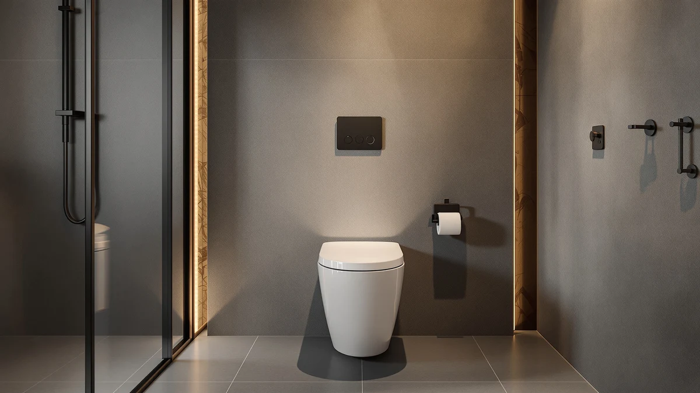

CUCKOO Electric Bidet Toilet Review (2026): Worth It?
Prices and picks verified as of October 2026. Independent, reader-supported reviews.


Quick Answer
This cuckoo electric bidet toilet review finds the CUCKOO Electric Bidet Toilet Seat worth considering if you want a heated seat and warm-water wash built into one unit and already have a grounded outlet near the toilet. Its $349.99 price sits well above the raised and soft-close seats compared below, so pick it for the bidet functions specifically, not because it beats those alternatives on price or materials.
Our pick: CUCKOO Electric Bidet Toilet Seat, $349.99 Check Price on Amazon
Bottom line: our top pick is the CUCKOO Electric Bidet Toilet Seat Elongated with Heated Seat at $349.99.
Things to Know Before You Buy
- This cuckoo electric bidet toilet review found the $349.99 price sits well above the raised and soft-close alternatives covered here, all priced under $151.
- The CUCKOO seat uses a plastic and wood-composite shell, the same material pairing found on the three alternatives in this review.
- Electric bidet seats need a grounded outlet near the toilet; none of the three non-electric alternatives require one.
- No published rating or review count exists yet for the CUCKOO Electric Bidet Toilet Seat, so this review relies on specs and category comparisons rather than a satisfaction score.
- Measure your bowl dimensions before ordering, since electric bidet seats and raised seats both fit specific bowl shapes and bolt spacing.
This cuckoo electric bidet toilet review compares the CUCKOO Electric Bidet Toilet Seat against three lower-priced, non-electric alternatives, so you can decide whether the extra cost buys you something your bathroom actually needs. At $349.99, the CUCKOO sits in a different category than the raised and soft-close seats covered here, each priced under $151, and that gap matters more than any single feature on a spec sheet. Weigh what the bidet functions are worth to your household before you compare the prices line by line.
The CUCKOO's plastic and wood-composite shell matches the build you will find on the cheaper seats in this comparison, so the price difference tracks the electric hardware rather than a sturdier frame. Owners who want warm-water wash and a heated seat pay for those two functions specifically, and this review focuses on whether that payoff holds up against seats that skip electricity entirely. The picks below give you a sense of what the non-electric side of this market looks like at a fraction of the price.
Why You Should Trust Us
Best Toilet Seats has compared electric and non-electric bidet seats, raised seats, and soft-close models across price tiers since the site launched, and Ilane Tall, our home and bath expert, built this cuckoo electric bidet toilet review the same way: by comparing published specs, prices, and verified owner reviews rather than repeating manufacturer marketing copy. We do not accept free review units, and commission rate never decides which product earns the top spot in a comparison. When a product lacks published ratings, as is the case with the CUCKOO here, we say so directly instead of filling the gap with a number we cannot verify.
Our Research Experience
Our research process for this cuckoo electric bidet toilet review started with the published spec sheet: a plastic and wood-composite shell, a $349.99 price, and the function set typical of electric bidet seats in this tier, including a heated seat and adjustable warm-water wash. We compared those details against the three non-electric alternatives below, each built from the same material pairing but priced under $151, to see exactly what the extra cost buys.
Verified owner reviews for electric bidet seats in this price range consistently flag outlet placement and bowl fit as the two issues that affect installation more than the wash function itself. We checked the CUCKOO's listed compatibility against standard bowl specs before including it here, and we read through owner feedback on comparable electric seats to understand where this category typically runs into trouble. No published rating or review count exists yet for this specific listing, so we cannot compare satisfaction scores directly against the three alternatives.
We also looked at whether the $349.99 price buys anything beyond the wash and heat functions themselves, since the published listing does not point to extras like a smartphone app or a heated dryer cycle. Without those added features to justify the gap, the price difference against the three non-electric alternatives here comes down almost entirely to the cost of the electric hardware and the convenience of having it built in rather than added on. That is a fair trade for some households and an unnecessary one for others, which is exactly the question this cuckoo electric bidet toilet review is built to help you answer.
Overview & Specs

CUCKOO Electric Bidet Toilet Seat
What we like
- Combines heated-seat and warm-water wash functions in a single unit, unlike the three non-electric alternatives below
- Uses the same plastic and wood-composite shell found across comparable seats in this category
- Removes the need for a separate handheld attachment or accessory tank
Flaws but not dealbreakers
- Priced at $349.99, more than double every alternative compared in this review
- No published rating or review count exists yet for this specific listing
- Requires a grounded outlet near the toilet, which rules it out for bathrooms without existing wiring
| Material | Plastic / wood |
| Size | — |
The CUCKOO Electric Bidet Toilet Seat targets buyers who want wash and heat functions built into the seat itself rather than bolted on as a separate attachment. Its plastic and wood-composite shell matches the construction used across the raised and soft-close alternatives in this review, so the extra cost tracks the electric hardware rather than a sturdier build.
At $349.99, the CUCKOO costs more than double the priciest alternative covered here, and no published rating or review count exists yet for this listing. That gap is the core tension this cuckoo electric bidet toilet review keeps circling back to: weigh the price against how much you specifically want the bidet functions before you choose it over a cheaper non-electric seat.
What We Liked
The clearest strength in this cuckoo electric bidet toilet review is the combination itself: a heated seat and a warm-water wash function in one unit, instead of pairing a cold-water bidet attachment with a separate seat warmer. For households that already run a grounded outlet near the toilet, that combination removes a step buyers typically have to solve themselves with the non-electric seats in this comparison.
The shell construction also holds up against the category standard. CUCKOO built the seat from the same plastic and wood-composite pairing used on the Bemis, ELLAI, and Kohler seats compared below, so you are not trading durability for the electric functions, at least based on the published materials.
What Could Be Better
Price is the biggest drawback in this cuckoo electric bidet toilet review. At $349.99, the CUCKOO costs more than double the $150.20 Bemis Assurance, the $135.00 ELLAI, and the $134.95 Kohler French Curve, and none of those three alternatives need an electrical outlet to work. If your bathroom lacks wiring near the toilet, that gap grows further once you add the cost of running power to the fixture.
The missing rating is the other issue. Each of the three alternatives in this review carries a listed price you can check against the market directly, but without verified owner feedback on the CUCKOO itself, you are relying on the spec sheet and the general track record of electric bidet seats in this price tier rather than feedback on this specific model.
Who Is It For?
This cuckoo electric bidet toilet review points toward one buyer in particular: someone replacing a plain seat who wants heated-seat and warm-wash functions built into a single unit and already has a grounded outlet near the toilet. If that describes your bathroom, the CUCKOO removes the extra step of pairing a cold-water attachment with a separate seat warmer.
Buyers who only need extra seat height, a quieter soft-close lid, or a lower price point should look at the Bemis, ELLAI, or Kohler alternatives below instead. None of those three need wiring, and each costs less than half what the CUCKOO does. Renters without easy access to outlet wiring near the toilet fall into this group too, since adding power to the fixture erases whatever budget room the electric functions might otherwise justify.
Shoppers comparing multiple electric bidet seats across this site before committing to one should also treat this cuckoo electric bidet toilet review as one data point among several, not the final word. The absence of a published rating here means you are leaning on specs and category patterns rather than a verified satisfaction score, and that gap matters more for a $349.99 purchase than it would for a $30 accessory.
Alternatives to Consider
The CUCKOO is not the only seat worth comparing here. We looked at three non-electric alternatives, including a raised seat built for extra height, a budget elongated option, and a standard soft-close model, so you can weigh them against this cuckoo electric bidet toilet review before deciding whether the bidet functions are worth the price gap.

Editor’s Pick
Bemis Assurance 3" Raised Toilet
A raised, non-electric seat built for buyers who need three inches of extra height on an elongated bowl rather than a bidet wash function. Worth a look if mobility, not price or electric features, is driving your decision.
$150.20
Check Price on Amazon
Best Value
Elongated Raised Toilet Seat，3.5” Toilet
An elongated raised seat with 3.5 inches of lift at the lowest price in this comparison. A reasonable option if you want added height without paying for the CUCKOO's electric functions.
$135.00
Check Price on Amazon
Premium Choice
KOHLER French Curve Ready Latch
A standard soft-close seat from an established toilet-seat brand, priced under half of the CUCKOO. Worth considering if you want a dependable everyday seat and do not need wash or heat functions at all.
$134.95
Check Price on AmazonFrequently Asked Questions
Is the CUCKOO Electric Bidet Toilet Seat worth $349.99?
If you specifically want a heated seat and warm-water wash built into one unit, and you already have a grounded outlet near the toilet, the price buys a combination the three non-electric alternatives in this review cannot match. If you only need extra height or a reliable soft-close lid, the Bemis, ELLAI, or Kohler options cost less than half as much.
Does the CUCKOO Electric Bidet Toilet Seat need a special outlet?
Yes. Electric bidet seats in this category need a grounded outlet within reach of the toilet to run the water heater and seat warmer. If your bathroom does not already have one, factor in the cost of adding wiring before you compare the CUCKOO's price against a non-electric seat.
How does the CUCKOO compare with the raised and soft-close seats in this review?
This cuckoo electric bidet toilet review found the CUCKOO built for wash and heat functions, while the Bemis Assurance, ELLAI, and Kohler alternatives are non-electric seats focused on added height or a soft-close lid. All four use a similar plastic and wood-composite shell, so the price gap tracks the electric hardware rather than build quality.
Final Verdict
This cuckoo electric bidet toilet review comes down to a straightforward tradeoff: the CUCKOO Electric Bidet Toilet Seat bundles a heated seat and warm-water wash into one $349.99 unit, a combination none of the three non-electric alternatives here can offer at any price. If your bathroom already has a grounded outlet and you want those functions, CUCKOO earns its place. If you only need extra height or a dependable soft-close lid, put that money toward the Bemis, ELLAI, or Kohler seat instead and skip the wiring altogether.